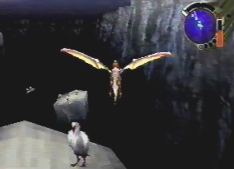

Conana Birds  |
Info When we went back above the Excavation Site, we came across Conana birds. They looked very different from the usual bio-engeneered monsters we had seen. Are they just normal birds, or could they be bio-engeneered somehow? A work of the Ancients or a work of nature? |